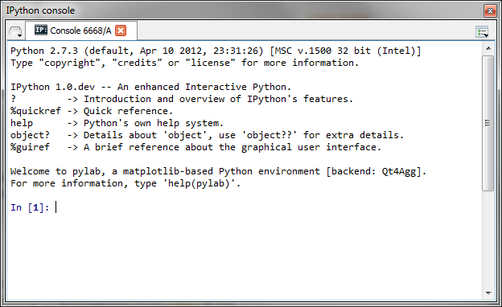
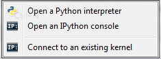
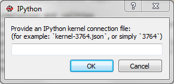

IPython Console¶
Spyder’s IPython Console implements a full two-process IPython session where a lightweight front-end interface connects to a full IPython kernel on the back end. Visit the IPython project website for full documentation of IPython’s many features.
From the Interpreters menu, Spyder can launch IPython Console instances that attach to kernels that are managed by Spyder itself or it can connect to external kernels that are managed by IPython Qt Console sessions or the IPython Notebook.
When “Connect to an existing kernel” is selected, Spyder prompts for the kernel connection file details:
IPython Consoles that are attached to kernels that were created by Spyder support the following features:
- Code completion
- Variable explorer with GUI-based editors for arrays, lists, dictionaries, strings, etc.
- Debugging with standard Python debugger (pdb): at each breakpoint the corresponding script is opened in the Editor at the breakpoint line number
- User Module Deleter (see Console for more details)
IPython Consoles attached to external kernels support a smaller feature set:
- Code completion
- Debugging toolbar integration for launching the debugger and sending debugging step commands to the kernel. Breakpoints must be set manaully from the console command line.
Related plugins: